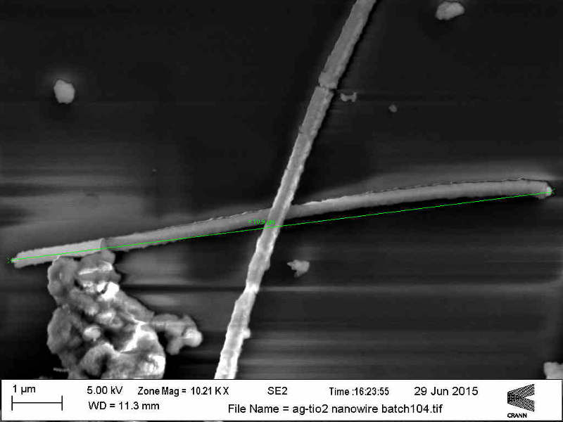
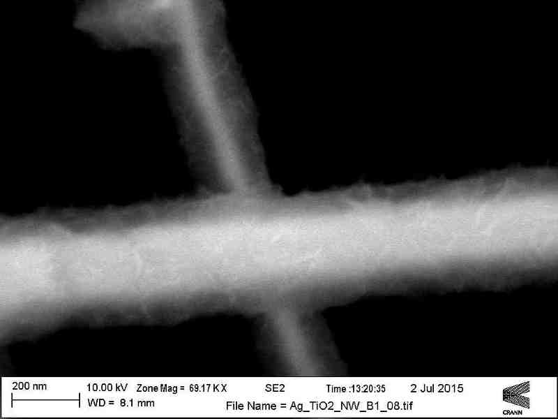

Measurement of connectivity in nanowire network
The aim of this project was to design an interface between Keithley Source Measure Unit (SMU) and Labview for two probe and four probe measurements of nano wire networks using probe station. Also, an interface to perform voltage and frequency sweep for small voltage signal using LCR meter was designed. During the second part of the project, statistical analysis of length and width of nanowire network for different samples was undertaken. Using 'ImageJ' software, measurements on images of nanowire network, obtained from Scanning electron microscope (SEM), was performed. It was later used to compare it with its electrical properties. To know more about ImageJ, visit their website.
Manual

SEM imaging of nanowire network

SEM imaging for length measurement

SEM imaging for width measurement